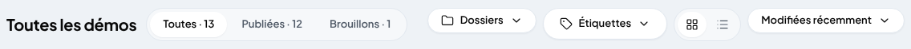
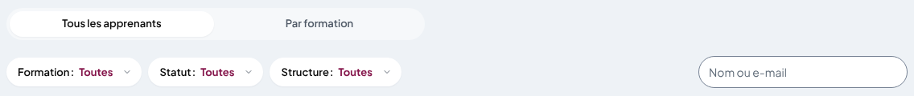
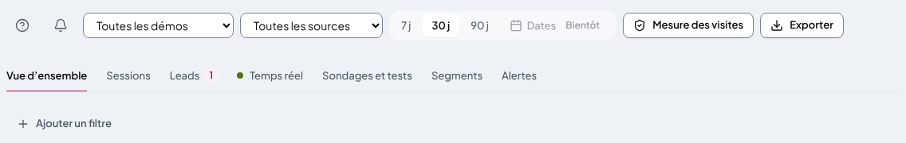

L40 : barres de liste
La même composition pour toutes les barres posées au-dessus d'une liste ou d'un tableau. Une seule hauteur (40 px). Les filtres sont groupés à gauche ; le tri et l'affichage sont à droite. Données fictives (espace « Acme »). Spécification : docs/ux/specs/l40-barres-liste.md.
1. Démos : « Toutes les démos »
Avant

Après
Toutes les démos
Après, avec des filtres actifs
Toutes les démos
2. Apprenants
Avant

Après
Tous les apprenantsPar formation
3. Analytics (tous les onglets, dont Leads)
Avant

Après
Analytics
Données mises à jour à l'instant
4. Sous 768 px (exemple : Démos à 390 px)
- « Filtres · n » ouvre une feuille avec les mêmes menus (Dossier, Étiquettes) et « Réinitialiser ».
- Le tri passe en icône seule, avec un nom accessible qui donne la valeur.